The CISO will not sign it. The general counsel will not sign it. So a refund agent finished in March has never touched a customer, and the two engineers who wrote it have moved to other work. This is the part that gets it cleared.
{
"mission_id": "legal-hold-sweep-4471",
"purpose": "Sweep a custodian folder under legal hold: catalogue
every file, hash each one for chain of custody, look
inside archives, and flag material appearing across
more than one source. No network access.",
"operational_status": "PASS",
"steps_executed": 4,
"receipt_chain": "VALID",
"release_required": true,
"released": false,
"squad_leader": "BLOCKED: no clearance recorded for
legal-hold-sweep-4471. Run the go/no-go
board and record a GO before release.",
"final_receipt_hash": "fc1244d6c1c8ff789c951f8be42b2627...",
"metrics": { "completion": 1.0, "success": 1.0,
"authority_coverage": 1.0, "receipt_integrity": 1.0 }
}
Verbatim output from the sample that ships with the package. Success is not permission, and that distinction is the entire product.
That is the money. Not a saving, not a projection. A finished system, already on the books, held at the last step by a CISO who will not put her name to it.
She is right to hesitate. When the board asks "was that action authorized?" she has a log file and an opinion. A signed receipt for every action, naming the policy that allowed it and the human who cleared it, turns her approval from a judgement call she owns personally into a document she can produce.
Three other lines show up in the business case and none of them are ours to quantify. EU AI Act exposure runs to €35 million or 7% of turnover, and Finland has been enforcing since January 2026. SOC 2 and ISO evidence is assembled by people at consulting rates, and here it is produced per action at no cost. And when the refund agent does issue the wrong refund, proving what was authorized is the difference between a contained incident and the company eating the loss. Nobody has measured a dollar of this yet, so we are not going to print one.
An agent deletes a customer record. Three weeks later the customer's lawyer asks why, and a support lead has to answer. The logs show the deletion happened. They do not show which policy allowed it, what credentials it ran under, or whether anyone on staff approved it.
Most governance tools settle this at deploy time, in a config review the platform team signed off in March. That decision was made once, against permissions, staff and data that have all changed since.
ABERNATE decides at the action. Every step, every time.
Permission is not one setting. Before an action runs, four separate questions have to answer yes.
A named human has the last word and can only say no. Their GO cannot push an action through a check that already failed, and a policy written without that gate is rejected the moment it loads, so no engineer disables it by forgetting it.
Every step writes a receipt, hash-linked to the one before it and signed. That file goes to the customer's lawyer, the SOC 2 auditor or opposing counsel. Each checks it with a command that ships in the package. None has to trust the operator, and none has to call us.
46 of 46 tests pass from a cold extraction on Python 3.12. Standard library only. No dependencies, no network, no account, no GPU, nothing to host. The internal file manifest is generated from the folder and refuses when the two disagree, because a hand-typed count is what went wrong twice.
Sold outright or licensed. The transfer includes the source, the hashes, the provenance record, the full adversarial test corpus and every defect ever found in it, including the ones still open. Evaluation copies are confidential.
hello@abernate.com